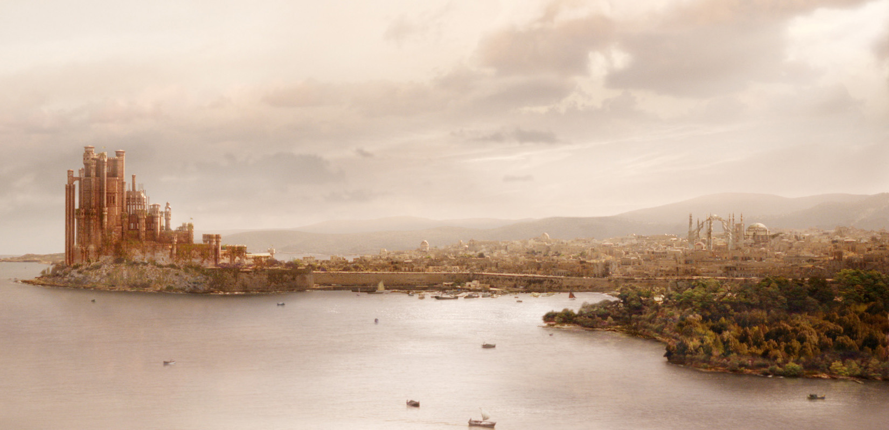

Королевская Гавань
Cтолица Семи королевств, крупнейший город Вестероса. Когда-то именно на этом месте высадился с маленькой армией и тремя драконами Эйгон I Таргариен. Маленькая деревянная крепость Эйгонфорт, построенная королем-завоевателем на холме над заливом, со временем уступила место величественному Красному Замку, откуда, восседая на Железном Троне, короли Вестероса правят державой. Вокруг замка со временем вырос огромный, перенаселенный и довольно дурно пахнущий город. Порядок в городе охраняет городская стража — золотые плащи.
